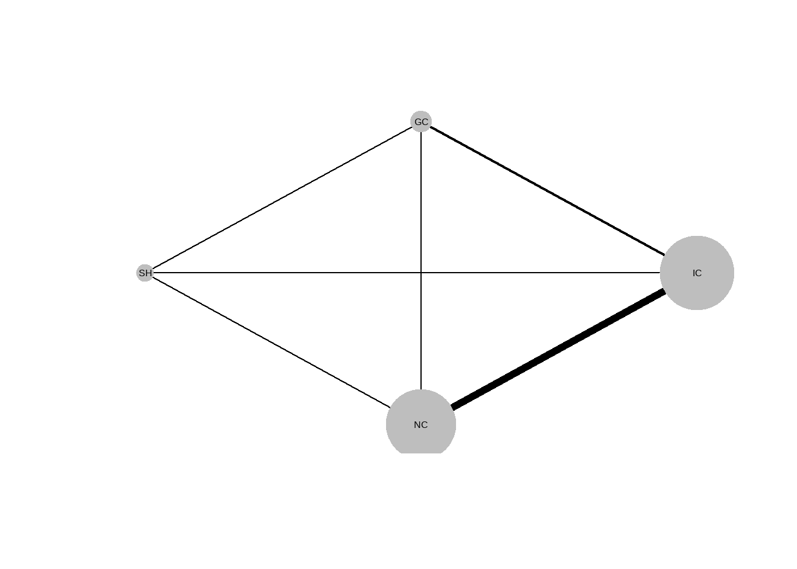

Section 8 Relabel study names into a numeric sequence
8.1 Introduction
I have read a tutorial about how to use Bayesian network meta analysis. In that, to use the package, I have to relabel study names into a numeric sequence.
So, this is the idea of the data that I want:
suppressPackageStartupMessages(library(tidyverse))## # A tibble: 10 × 2
## Study Study_num_id
## <chr> <int>
## 1 E 1
## 2 E 1
## 3 A 2
## 4 A 2
## 5 B 2
## 6 B 3
## 7 B 4
## 8 C 4
## 9 D 5
## 10 D 58.2 Create data
Study <- c("E", "E", "A", "A", "B", "B", "B", "C", "D", "D" )
data <- tibble(Study)
data <- data %>% arrange(Study) # THIS STEP IS ESSENTIALn_occur <- data.frame(table(data$Study))
n_occur## Var1 Freq
## 1 A 2
## 2 B 3
## 3 C 1
## 4 D 2
## 5 E 2Stu_num_id <- c()
for (i in 1:dim(n_occur)[1]){
num_id <- rep(i, times = n_occur$Freq[i])
Stu_num_id <- Stu_num_id %>% append(num_id)
}Note: To make the study is appear correctly, you will need to arrange your studies based on alphabet order
data <- data %>% cbind(Stu_num_id)
data## Study Stu_num_id
## 1 A 1
## 2 A 1
## 3 B 2
## 4 B 2
## 5 B 2
## 6 C 3
## 7 D 4
## 8 D 4
## 9 E 5
## 10 E 58.2.1 What if we want to keep the order of Study names as they were
Study <- c("E", "E", "A", "A", "B", "B", "B", "C", "D", "D")
Study_num_id <- c(1L, 1L, 2L, 2L, 2L, 3L, 4L, 4L, 5L, 5L)
data <- tibble(Study, Study_num_id)
data## # A tibble: 10 × 2
## Study Study_num_id
## <chr> <int>
## 1 E 1
## 2 E 1
## 3 A 2
## 4 A 2
## 5 B 2
## 6 B 3
## 7 B 4
## 8 C 4
## 9 D 5
## 10 D 5data <- data %>% select(-c("Study_num_id"))n_occur <- data.frame(table(data$Study))
n_occur## Var1 Freq
## 1 A 2
## 2 B 3
## 3 C 1
## 4 D 2
## 5 E 2I don’t think this is a clever way of doing this (especially with data having many studies).
Study_name_unique <- data %$% Study %>% unique()
Study_name_unique## [1] "E" "A" "B" "C" "D"Study <- c()
Stu_num_id <- c()
for (i in 1:dim(n_occur)[1]){
study <- rep(Study_name_unique[i], times= n_occur$Freq[i])
Study <- Study %>% append(study)
num_id <- rep(i, times = n_occur$Freq[i])
Stu_num_id <- Stu_num_id %>% append(num_id)
}
Study_Studyid_dat <- tibble(Study, Stu_num_id)
Study_Studyid_dat## # A tibble: 10 × 2
## Study Stu_num_id
## <chr> <int>
## 1 E 1
## 2 E 1
## 3 A 2
## 4 A 2
## 5 A 2
## 6 B 3
## 7 C 4
## 8 C 4
## 9 D 5
## 10 D 5Now, we have a table with Study name and Study id with the original of Study name oder. If we have your original data with many more columns, what we need to do is just joining the two data tables.
8.3 Transform an arm-based data table to a study-based data table
Treat <- c("T", "P", "P", "T", "O", "T", "T", "P", "P", "T")
N <- c(12, 23, 45, 78, 12, 2 , 4, 6, 8, 9)
Total <- c(222, 344, 222, 445, 224, 677, 345, 446, 234, 467)
data <- data %>% cbind(Treat) %>% cbind(N) %>% cbind(Total)%>% mutate(Treat = factor(Treat))data## Study Treat N Total
## 1 E T 12 222
## 2 E P 23 344
## 3 A P 45 222
## 4 A T 78 445
## 5 B O 12 224
## 6 B T 2 677
## 7 B T 4 345
## 8 C P 6 446
## 9 D P 8 234
## 10 D T 9 467data %>% pivot_wider(names_from = Treat, values_from = c(N,Total))## # A tibble: 5 × 7
## Study N_T N_P N_O Total_T Total_P Total_O
## <chr> <list> <list> <list> <list> <list> <list>
## 1 E <dbl [1]> <dbl [1]> <NULL> <dbl [1]> <dbl [1]> <NULL>
## 2 A <dbl [1]> <dbl [1]> <NULL> <dbl [1]> <dbl [1]> <NULL>
## 3 B <dbl [2]> <NULL> <dbl [1]> <dbl [2]> <NULL> <dbl [1]>
## 4 C <NULL> <dbl [1]> <NULL> <NULL> <dbl [1]> <NULL>
## 5 D <dbl [1]> <dbl [1]> <NULL> <dbl [1]> <dbl [1]> <NULL>8.4 Frequentist Network meta analysis
Reference: https://bookdown.org/MathiasHarrer/Doing_Meta_Analysis_in_R/netwma.html
suppressPackageStartupMessages(library(dmetar))DT::datatable(TherapyFormats)str(TherapyFormats)## 'data.frame': 184 obs. of 8 variables:
## $ author : chr "Ausbun, 1997" "Crable, 1986" "Thiede, 2011" "Bonertz, 2015" ...
## $ TE : num 0.092 -0.675 -0.107 -0.09 -0.135 -0.217 0.103 -0.085 -0.052 -0.109 ...
## $ seTE : num 0.195 0.35 0.198 0.324 0.453 0.289 0.401 0.516 0.5 0.413 ...
## $ treat1 : chr "ind" "ind" "ind" "ind" ...
## $ treat2 : chr "grp" "grp" "grp" "grp" ...
## $ treat1.long: chr "Individual" "Individual" "Individual" "Individual" ...
## $ treat2.long: chr "Group" "Group" "Group" "Group" ...
## $ versus : chr "ind vs grp" "ind vs grp" "ind vs grp" "ind vs grp" ...TherapyFormats$treat1 %>% unique() ## [1] "ind" "grp" "gsh" "tel" "ush"TherapyFormats %$% treat2 %>% unique() ## [1] "grp" "gsh" "tel" "wlc" "cau" "ush"8.5 Arm base Network Meta Analysis using pcnetmeta package
Reference: https://pubmed.ncbi.nlm.nih.gov/28883783/
suppressPackageStartupMessages(library("pcnetmeta"))
data("smoke")- The columns:
- s.id: contains IDs for the 24 studies,
- t.id: labels the treatments included in each study
- r: the number of events
- n: the number of participants, respectively
- s.id: contains IDs for the 24 studies,
head(smoke)## s.id t.id r n
## 1 1 1 9 140
## 2 1 3 23 140
## 3 1 4 10 138
## 4 2 2 11 78
## 5 2 3 12 85
## 6 2 4 29 170nma.networkplot(s.id, t.id, data = smoke, trtname = c("NC", "SH", "IC", "GC"))